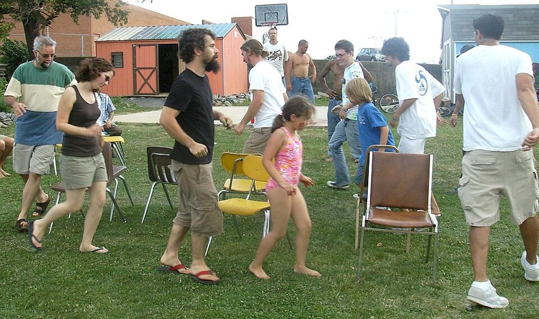
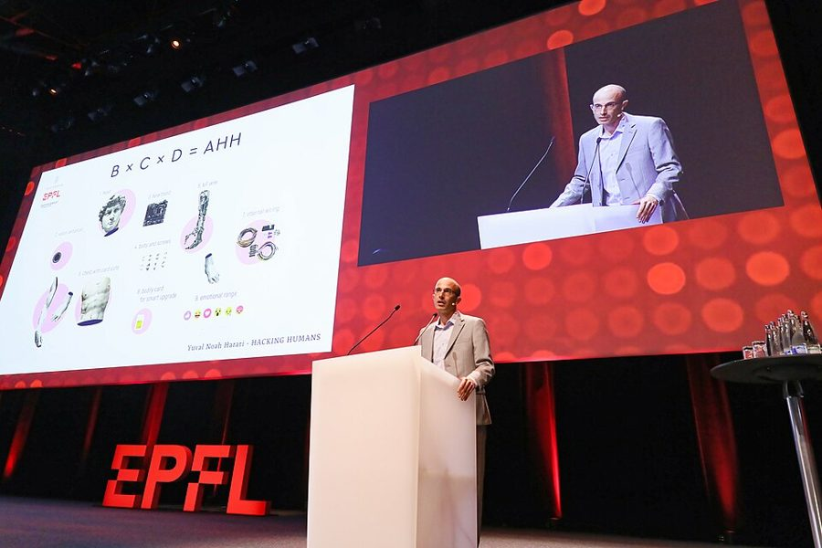

这一章在做什么
团队从一张会议桌坐得下，长到下面分了好几层，经理干的就成了另一份工作。这一章要回答：团队大了，你该把什么交出去，自己守住什么？作者讲了评审会椅子不够的那天，一位下属提醒她「你算是个大人物了」，奶奶什么都抢着替她做，她把一位撑不住的经理换下来，还有休完育儿假发现自己主持的周会被别人办得更好。读的时候抓一条线：放手不是甩手，经理要不断把自己现在的活交出去。下面开始有组长的读者，读来最有感触。
1859 年夏天，走钢丝艺人 Charles Blondin 在高空绳索上横跨尼亚加拉河。作者说授权像蒙着眼走钢丝，平衡很难维持（§2）。William England，公有领域，维基共享资源
读之前：这一章在全书的哪里
上一章讲怎样把事做成：具体的愿景、执行、不断改进的流程。这一章的团队大到你看不全了，你下面多了一层经理。前几章的东西在这里换了用法：第 1 章的目标、人、流程，成了你和下级经理对齐时问的问题；第 3 章的一对一面谈，作者说不该拿来听进度。下一章是最后一章，讲文化。
这一章是高速增长期的视角：人一多就往下设经理，层级跟着长。2023 年起 Meta、Amazon 反过来砍管理层级，让每位经理多带人。书里授权和对齐的办法大多还用得上，但「团队会一直长大」这个前提，今天不一定成立，详见「今天怎么看」。
读的时候带着这几个问题。不用先找答案，读完回来对照「检查一下理解」。
一位下属告诉作者，设计师们不敢当面反对她，因为她「算是个大人物」。你当过别人眼里的「大人物」吗？会上的沉默，你当时是怎么理解的？§1
作者原以为，把难题丢给下属的是坏经理。你带人时更像她那位什么都替她做的奶奶，还是更像甩手不管的人？§3
换掉一位经理之前，她问自己：要是这个位置空着，我还会雇他吗？这个问题对谁公平，对谁不公平？§5
你现在手上的活，有哪几件是只有你做得最好、又对团队最要紧的？其余的为什么还在你手里？§6
分节地图
这一章的每一节一条，按原书顺序。粗体是本站给的节名，后面是档和英文词数；下面一行是原书小标题、纸书页码和这一节开头几个英文词；再下面是译本的小標題和开头几个字，在译本电子书里搜它就能跳过去。每节标了档：「先读」是这一章的骨架，「有空」例子更多、讲得更细，跳过不丢线。读完打个勾。
评审会的椅子不够了，报名分享的排到十个人，作者发现老办法不灵了。团队每翻一倍，她都觉得换了一份工作。很短，是全章的引子。 五个小标题讲大团队和小团队的不同：从直接管到间接管，别人开始不敢跟你说真话，整天切换，只能挑仗打，越往上越靠带人的本事。「大人物」的故事在第二个小标题。 先给授权下定义：什么时候自己下场，什么时候退后放手。然后是两头的漫画像，事事插手的和甩手不管的，再加上她自己从一头矫枉到另一头。全章的骨架。 奶奶什么都替她做的故事，引出她早年的误解：以为把难题交给下属的是坏经理。要点是交出去以后公开宣布谁负责，你自己还留在船上。 别指望知道所有细节，先对齐最要紧的事，再看目标、人、流程想得一不一样。Chris 那句「人放对了吗」和造船的名言都在这里。跳过会少「一对一不该听进度」这一条。 团队长大以后，原来的经理撑不住了怎么办。她借 Andy Grove 的一句话和朋友的一个问题，最后请化名 Raphael 的经理离开岗位。还没带经理的读者可以先跳过。 全章最长：不断把自己现在的活交出去。先是周会在她休假时被办得更好，再是一条经验法则和几件不该交的事，最后回答「都交出去了，我还有什么用」。
先用中文过一遍：这一章的概念
先把这一章用到、作者默认你懂的几个概念讲一遍。讲的是概念本身和它在管理界的来历，作者拿它推出什么，读原书时自己看。
§1 管理幅度 span of control 一个经理直接带几个人，管理学叫管理幅度。1933 年管理顾问 Graicunas 算过一笔账：下属每多一个，经理要照应的关系（和每个人的、几个人之间的）几乎翻一倍，6 个下属是 222 种，8 个就到了 1080 种。英国的 Urwick 由此主张：工作彼此交织的下属，一个上级最多带五六个。
这些数今天没人照搬，合适的幅度要看工作像不像、下属熟不熟、经理自己还干多少一线的活。Andy Grove 在《High Output Management》里给过一个经验数：以带人为主的经理，六到八个下属合适。幅度和层级是一件事的两面：同样一百个人，每位经理带得越多，层级就越少，这就是「扁平化」之争。
一层：经理直接带 30 人
每人每周半小时，就是 15 小时
两层：4 位组长各带六七人
经理直接带 4 人，离一线远了一层
本站示意图。同样 30 个人，一层还是两层：多一层，经理省下了时间，也离一线远了一步。
在这一章： §1 作者算了一笔账：三十个人每周各谈半小时就是十五小时；她自己带到八个人以上就觉得顾不过来。「八个」是她的感受，不是规则。
§2 授权的程度 levels of delegation 授权不是一个开关，是一把刻度尺。1958 年 Tannenbaum 和 Schmidt 在《哈佛商业评论》上把领导方式排成一条连续谱：一头是经理自己决定、告诉下属照做，中间是经理先听意见再定、或者划好边界让团队定，另一头是团队在大框架里自己做主。后来各种「授权分几级」的说法，大多是这条谱的变体。
放到哪一格，不看经理的性格，看这件事和这个人：Andy Grove 叫它「与任务相关的成熟度」，同一个人做熟悉的事可以全放，做新的事就要多盯。容易混的是授权和甩手：授权交出去的是决定权，结果还是你负责，进展你也照样要知道；甩手是连这些一起扔了。
放给对方的越来越多
我自己做 自己下场
我定你做 告诉你怎么做
听你说，我定 先听意见
你定，先报我 划好边界
你定，事后说 全权交出
← 总待在这头：事事插手
总待在这头：甩手不管 →
同一个人：熟的事往右放，新的事往左收
本站示意图。五格是本站的简化分法，参照 Tannenbaum 和 Schmidt 的连续谱；两头的标签借作者在 §2 画的两种经理。
在这一章： §2 作者的定义就是在这把尺上取舍：何时自己下场，何时退后。她画的两幅漫画像，一个事事插手，一个甩手不管，就是尺子的两头。
§1 经理的经理和隔级面谈 manager of managers / skip-level 团队大到一定程度，你的下属自己也是经理，你成了「经理的经理」，硅谷公司常叫二线经理，再往上是总监。你和一线员工之间隔了一层：要通过别人去带人，消息也要经过一层才到你这里，好消息容易被放大，坏消息容易被磨平。
业界常用的补法是隔级面谈（skip-level meeting）：定期和下属的下属单独或成组地聊，听一线的声音。书里没讲这个，是本站的补充。规矩是不越过中间那位经理拍板，不让它变成告状会，听到问题回头和那位经理一起解决。这一层最常见的错，是把下级经理当传话筒，自己还在直接管每个人。
在这一章： §1 第一个小标题讲从直接管到间接管，第二个小标题的「大人物」故事，就是隔了一层后听不到真话；§4 讲怎样和下级经理对齐。
遇到这些事：情境卡
以后带人碰到这些事，从这里查。每张卡先说动手前要想清楚什么，再用本站的话转述作者的办法（不照抄原书的清单），然后是书外的补充和最容易犯的错，最后指回书里讲它的那一节和纸书页码。全书的情境卡汇总在情境卡 。
§1 会上大家都点头，散会后才听说他们不同意
先想清楚 他们是真同意，还是不敢说？在不常见到你的人眼里，你是手里握着评级的人，你随口一句话的分量，比你以为的重。
作者的办法 留意几个信号：你的建议被当成了命令，你的提问被听成了评判，你听到的总是好消息。 明说欢迎反对意见，并且真的奖励说出来的人；自己错了就认。 说话给人留口子：先说自己可能完全错了，不同意请讲；或者直接问「换你是我，你会怎么做」。 本站补充 层级感强的团队里（很多中国公司都是），一句「欢迎反对」不够，要改做法：先让大家写下意见再讨论，你最后一个开口，散会后单独问一两个人。远程会议上更要这样，屏幕上的沉默更难读。
小心 把沉默当同意。作者那次问大家有没有想法，人人摇头，她走出会议室还觉得这次会开得很好。
书里：People Treat You Differently，纸书 p.220
§4 团队大到你已经不知道每个人在干什么
先想清楚 你真的需要知道每件事吗，还是不知道让你心慌？你该管的是方向对不对、人放对了没有，不是每个任务走到哪一步。
作者的办法 别拿一对一面谈 听进度：那是为下属开的会。 和每位下级经理对齐眼下最要紧的几件事：公司在推什么、哪件事让你睡不着，各自在里面担什么。 再对一遍目标、人、流程 ：谁做得好、谁不达标，你们看法一样吗？ 本站补充 进度交给书面：周报、看板、项目文档，你需要时自己去看。远程团队尤其要这样，否则一对一会被状态汇报占满。隔级面谈能补上一线的声音，但别拿它来查岗。
小心 一慌就钻回细节，挨个找一线的人问进度。下级经理会觉得被绕过，以后有事更不愿先告诉你。
书里：Two Heads, One Shared Vision，纸书 p.227–229
§5 你手下的一个经理带不动他的团队
先想清楚 这是第 3 章「一直达不到期望」那张卡换了位置：经理拖累的是一整个团队。分清他是在把事搞坏，还是没搞坏但拖着团队（会救火不会防火，招得满人招不来好人）。团队长大了他没跟上，不等于他当初不好。
作者的办法 先信任：人都会犯错，常常最好的做法是相信对方。 但要算时间账：她信成长心态 ，人总能进步，问题是要多久，这期间团队付出什么。 她借 Andy Grove 的话提醒自己：下属的学费不该由客户来付。 一位朋友教她问：这个位置要是空着，你会再雇他，还是换个人试试？答案是不会，就动。 本站补充 「动」不等于开除：书里那位经理是离开这个岗位。让他回去带小组或做专家，有个体面的落脚处，团队里其他人也看着。动之前先想好谁来接。
小心 在细节里打转：他会怎么想，我的反馈给够了没有。作者说这些她都担心过，可最要紧的问题是接下来几年团队怎样更成功。
书里：What to Do When a Manager Struggles，纸书 p.229–231
§6 团队大了，你不知道哪些事该放手
先想清楚 这和第 1 章「忍不住自己写代码」不同：你手上的事看起来都像经理该做的，开周会、跟招聘、说难听的话。先列出来，每件问两句：对组织最要紧吗？是只有你做得最好吗？
作者的办法 时间花在两者的交集上：对组织最要紧的，和你做得比谁都好的。 下属做得和你一样好的，交出去。 你做得更好的也尽量交，边交边教，除非它属于最要紧的那几件，或者对方还没准备好。 不该交的，书里举了几种，比如两个下属的目标打架时由你拍板，见纸书 p.234–235。 本站补充 交出去要公开说现在谁负责（§3）。最难交的常是你喜欢、又带给你身份感的事，作者的周会就是。缩编的年份里有人怕交光了自己就没用了，这一层见「本站怎么看」。
小心 只交你不爱干的杂事。下属一眼看得出你交出来的是活儿，还是责任。
书里：Aim to Put Yourself Out of a Job，纸书 p.232–235
原文里的口语和行话
读英文纸书可能卡住的地方，按原书顺序分节排。灰色斜体是原文里连续的几个词，后面是纸书页码，翻书找得到；标「每个字都认识」的，是每个词都眼熟、合起来意思却变了的，最容易读错。点「记下」收进词本。
§0 开头eagle eye
… an eagle eye for visuals …
（对视觉细节）眼光极尖
和后面的 superpowers 一起，是作者夸新人各有绝活。
two pizzas
… Two pizzas were still enough to …
两个披萨还够全组吃
呼应第 3 章：亚马逊有「两个披萨团队」的说法，见第 3 章「书里的人和背景」。
§1 Big Teams Versus Small Teamshyper-growth
… hyper-growth is almost a way of life
超高速增长
硅谷说法，指公司人数、用户一两年翻几倍的阶段。
siren song
… The siren song of an ambitious …
（难以抗拒的）诱惑
希腊神话里海妖塞壬用歌声引水手触礁。带一点「美但危险」的意味。
orientation
… weekly orientations greet a sea of …
新员工入职培训，迎新会
不是「方向」。大公司每周一批新人，一起听入职介绍。
report up through
… who reported up through me presented …
汇报线最后归到我这里
这三位设计师不是她的直属下属，中间隔着别的经理。report 当动词「汇报给」，up through 是一级级往上。
kind of a big deal
… you’re kind of a big deal …
算是个大人物
2004 年喜剧电影《王牌播音员》（Anchorman）里主角那句自吹的台词，后来成了常被拿来调侃的流行语。作者说，这是她第一次听人这样说她。
hard to compute
… It was hard to compute …
一时脑子转不过来
compute 本是「计算」，这里是「想得通、理解」：她怎么也想不到自己会让人害怕。
call the shots
… your prerogative to call the shots …
拍板，说了算
不是「开枪」。prerogative 是职权、特权。
own one’s mistakes
… Own your mistakes and remind your …
认下自己的错
own 当动词是「承认、担起」，硅谷常说 own it。
context switch
… my ability to context switch also …
在不同事情之间切换
程序员熟悉的「上下文切换」，借到人身上：从一个会跳进另一个会，脑子要卸下前一件、装上后一件。
roll with it
… you learn to roll with it
顺势应付，随它去
和 roll with the punches 意思相近，后者来自拳击：顺着拳势后仰卸力。
outstanding
… with zero outstanding tasks left …
没办完的，待处理的
熟词生义，不是「杰出的」。outstanding tasks 是待办，outstanding invoice 是没付的账单。
draw the line
… going to draw the line?
划定界限，到哪为止不管了
musical chairs
… like a game of musical chairs
抢椅子游戏
见「书里的人和背景」。比喻人员轮换、换来换去。
tall tale
… one of those tall tales meant …
夸张得不可信的故事
tall 在这里是「吹得过头的」，不是「高」。
far-fetched
… is as far-fetched as I …
牵强，离谱
§2 The Tightrope Act of Great Delegationtightrope
… Like crossing a tightrope while blindfolded …
走钢丝
walk a tightrope 常比喻在两难之间小心求平衡。
sitcom cliché
… you’ve become a sitcom cliché …
情景喜剧里的老套角色
情景喜剧里一眼就认得出的讨人嫌上司，演来演去都是那一套。
run something by someone
… run every decision by you …
先拿给某人过目、点头
不是「跑」。run it by me 是「先跟我说一声」。
do someone’s bidding
… robots to do your bidding
唯命是从
no sheriff in town
… there’s no sheriff in town
镇上没有警长，没人管
接着前面的 Wild West（西部片里的蛮荒西部）。常见的反说是 there’s a new sheriff in town：新官上任，要立规矩了。
roll up one’s sleeves
… rarely roll up your sleeves and …
撸起袖子亲自干
overcorrect
… I overcorrected and then heard …
矫枉过正
far from an exact science
… is far from an exact science …
远没有一定之规
an exact science 是「能精确计算的学问」，far from 是「远远不是」。
§3 Giving People Big Problems Is a Sign of Trustfairy godmother
… materialize like a fairy godmother with …
（有求必应的）仙女教母
灰姑娘故事里那位一挥魔杖就送来马车和礼服的仙女。
live and breathe
… time to live and breathe a problem …
全身心扑在上面
不是「活着、呼吸」。live and breathe something 是吃饭睡觉都想着它。
the deep end
… novice swimmer into the deep end …
泳池的深水区
throw someone in at the deep end 是让新手直接面对最难的事。作者说：可以交难题，但别扔下就走。
fend for oneself
… report to fend for himself
自己想办法，自生自灭
§4 Two Heads, One Shared Visionsee eye to eye
… you see eye to eye on …
看法一致
不是「对视」。常用否定式：we don’t see eye to eye，我们意见不合。
keep someone up at night
… is keeping you up at night …
让人愁得睡不着
cut through the noise
… question cut through the noise and …
拨开杂音，直指要害
trump
… of what mattered most. People trump …
（动词）压过，比……更要紧
来自牌戏里的王牌 trump card。People trump projects：人比项目重要。
drum up
… don’t drum up the men to …
召集，张罗（人手）
原指敲鼓招兵。
§5 What to Do When a Manager Strugglespositive multiplier
… be a positive multiplier for her …
（让团队产出成倍增长的）正向乘数
fireproof
… the team become more fireproof
（团队）更不容易出事
接着前面的 put out fires（救火）：会救火的经理不一定会防火。
small and scrappy
… those teams are small and scrappy …
人少、有股拼劲、凑合着也能干
scrappy 不是「零碎的」，是创业团队爱用的褒义词：资源少但敢打敢拼。
speculative
… and a few speculative projects
试探性的，成不成还不知道的
不是「投机的」。下一段说其中有的后来大获成功。
thrash
… the thrash everyone else would go …
来回折腾，内耗
本义是痛打、翻滚。硅谷说 thrash，指计划反复变、人跟着瞎忙，换经理就会带来这种动荡。
zero in on
… me to zero in on what …
瞄准，聚焦到
来自枪炮校准瞄具（zero a rifle）。
move off one’s role
… he should move off his current role
离开现在的岗位
说得很克制：是调离这个经理岗位，书里没说开除。
make the move
… the answer is no, make the move
动手（做人事调整）
move 在这里是「一步棋」，指换人。
§6 Aim to Put Yourself Out of a Jobleadership capacity
… double your leadership capacity every year
领导上的容量：能带多少人、扛多少事
capacity 是容量。可以读成团队里能独当一面的人手，也可以读成你自己能接下的事；上一句两样都说了：团队更能干，你也能接更多。
emcee
… played the role of emcee
主持人
就是 MC（master of ceremonies）的读音拼写。
show-and-tell
… lunches, show-and-tell learning sessions, or …
（同事轮流）展示讲解的分享会
原是美国小学的活动：孩子带一样东西到班上，给大家看、讲给大家听。
strong suit
… this wasn’t my strong suit
强项
来自牌戏：suit 是花色，strong suit 是你手里最强的那门花色。
mixer
… a monthly Wednesday-night mixer, grew …
联谊会，交流酒会
不是搅拌机。让互不认识的人混在一起认识的聚会。
give someone a fish
… give someone a fish, and you …
给人一条鱼
整句就是中文的「授人以鱼不如授人以渔」。
operator
… is an amazing operator, so he’s …
擅长运营、把复杂流程跑顺的人
不是接线员。硅谷说某人是 great operator，指执行和管流程的本事强。
close
… finding and closing talent
（把候选人）谈下来，让对方接 offer
销售行话 close a deal 借到招聘：找到人是一步，让人点头加入是另一步。
escalate
… know to quickly escalate to you …
往上报，交给上级定
职场里常说「升级」，指自己定不了，把问题提给更高一级。
overhead
… doesn’t that mean you become overhead?
只花钱不产出的管理成本
熟词生义：不是「头顶上」，是会计里的「间接费用」。说一个经理是 overhead，就是说他是冗余开销。§2 也用过这个词。
put oneself out of a job
… put yourself out of a job …
让自己「失业」：培养人接替你
字面是让自己没工作，作者的意思是不断把自己的活交给别人，好去做更大的事。
书里的人和背景
按在书里出现的顺序排，标题前是节号。只讲到读懂这一章需要的程度。书里的同事和下属（Raphael、Elaine 等）是普通人，作者多用化名，这里不另作介绍。
§1 抢椅子和高管换岗
美国弗吉尼亚州哈里森堡一场社区草坪聚会上，大人小孩在玩抢椅子，2008 年 6 月。与本书无关。Artaxerxes，CC BY-SA 3.0，维基共享资源 musical chairs 是美国孩子聚会常玩的游戏：椅子比人少一把，大家绕着走，音乐一停就抢着坐，没抢到的出局。作者说她听说过一位 CEO 每隔几年让高管们像这样换岗，她起初以为是编来说教的故事，书里也没说是哪家公司。她后来觉得没那么离谱：越往上，经理的活越不靠本行手艺，靠的是招到出色的带头人、搭出能自己转的团队、讲清愿景、沟通好。
§4 Yuval Noah Harari 和「大规模合作」
Harari 在瑞士洛桑联邦理工学院（EPFL）演讲，2019 年 7 月。Alain Herzog，CC BY 4.0，维基共享资源
Yuval Noah Harari 1976 年生，以色列历史学家 在耶路撒冷希伯来大学任教。《人类简史》（Sapiens）2011 年以希伯来文出版，2014 年出了英文版，成为全球畅销书。
作者引的那句话，按书后注释出自 2015 年 2 月美国全国公共广播电台（NPR）对他的采访，不是书里的原文。Harari 的论点是：素不相识的人能大规模合作，靠的是大家共同相信的故事，比如金钱、国家、公司。作者把它说成「脑子里装着同一个愿景」，借来说明团队大了以后，经理和下级经理要对齐方向。
§4 那句「造船」名言是谁说的
Antoine de Saint-Exupéry 1900–1944，法国作家、飞行员 《小王子》（1943）的作者。1944 年驾机执行侦察任务时失踪。
「想造一条船，别去召集人砍木头、分派活儿，要教他们向往无边的大海」，这句话在管理书和演讲里常被归到他名下。作者写的是「据说是他说的」，这个保留很对：Quote Investigator 2015 年考证过，在他的作品里找不到这句话，最接近的是他身后出版的《要塞》（Citadelle，1948）里一段意思相近的文字，今天流传的是后人改写的版本。
§5 Andy Grove 说的「学费」Andy Grove 的介绍见第 1 章。作者引的那段，书后注释说出自《High Output Management》第 177 页：一个下属活干得差，Grove 的一位同事说「让他自己犯错，这样才学得会」；Grove 说，问题是这笔学费由客户在付，这绝对不对。作者拿它提醒自己：让一个不合适的人在岗位上慢慢学，代价落在团队和客户身上。
§6 设计模式库作者说的「共用的设计模式库」，今天一般叫设计系统（design system）：把按钮、颜色、字号、间距和交互规则做成一套共用的组件和规范，大家用同一套积木搭界面。对程序员来说，它像前端组件库加一份风格指南。2014 年 Google 推出的 Material Design 让这种做法广为人知。它的用处正是作者说的：团队越大，越需要它让产品各处看起来、用起来一致，大家也做得更快。
译本勘误
对着译本读这一章时，下面这些地方会把人读歪。方框里是译本的原句，在译本电子书里搜它就能找到；灰色斜体是英文原文那一处，后面是纸书页码。只收意思错了、反了、漏了的，措辞上的出入不收。全书的勘误汇总在译本勘误 。
§0 是每过几年，不是每隔一两年数字 … Every few years, it doubled again …
译本：「接著每隔一兩年，人數又會再度翻倍」
原文说团队先翻了一倍，之后「每过几年」又翻一倍。译本写成一两年，增长速度被说快了不少。作者说每翻一倍她都像换了一份工作，几年一次和一两年一次，读来分量不同。
§1 是营销长，不是销售长误译 … be a strong chief marketing officer
译本：「財務長如何也會是好的銷售長」
原文举了两个跨行的例子：销售主管去管工程，财务长去当营销长（CMO）。译本把后一个也写成「銷售」，两个例子就不对称了。读时把「銷售長」换成「行銷長」。
§4 第二个问题在下一段误译 … Then, talk about those with your …
译本：「二、和部屬提起那些優先事項」
原文让你问自己两个问题：第一问是团队眼下最要紧的事是什么，问完和下属聊；第二问在下一段，是目标、人、流程想得一不一样。译本把「和下属聊」标成了「二」，下一段又来一个「第二個問題」，读起来像有三问。
§4 这是第 1 章的「目标、人、流程」术语 … think about people, purpose, and process …
译本：「我們對於人事、目的、流程的看法一致嗎」
这三个词就是第 1 章那三根杠杆，译本在第 1 章作「目標、人、流程」，这里换成「人事、目的」，不容易认出是同一组。「人事」也比原文窄：下一段问的是谁做得好、谁不达标，讲的是团队里的人。
§4 大家准备的是严肃地谈，不是挨骂误译 … bracing ourselves for a serious talk …
译本：「克里斯沒斥責我們」
原文只说他们做好准备，要严肃地谈眼下的局面；Chris 却先问人放对了没有。故事的反差是「谈项目」和「谈人」。译本加了「被罵」「沒斥責」，反差成了上司宽不宽容，重点就偏了。
§6 是全公司设计师的会，不是全公司的会误译 … run a company-wide design meeting
译本：「我會開一場全公司都參加的設計會議」
company-wide 修饰的是设计会议：全公司的设计师都来，后面也说是设计师们聚在一起听消息、看作品、欢迎新人。译本写成全公司都参加，像一场全员大会。
§6 是「最重要的事之一」误译 … one of the most important things …
译本：「打造優秀團隊是你最重要的任務」
原文说，不管你是 CEO 还是一线经理，建一支好团队是你能做的最重要的事之一。译本丢了「之一」。这一段本来就在列几件同样要紧、不该交出去的事，作者的限定词要留着。
值得停下来的句子
the art of knowing when to dive in yourself and when to step back and entrust others.— §2，纸书 p.223。本站译：懂得什么时候自己跳进去、什么时候退后一步把事托付给别人的艺术。
这是作者给授权下的定义，加了引号，是她自己的话。关键在「什么时候」：授权不是一种性格（放手的人、不放手的人），是一次次的判断，同一个人、同一周里也会不一样。译本：「一門藝術，知道何時該自己跳下去做」 ，意思没错；注意 entrust 不只是「放手」，还有把事郑重托付出去的意思。
He’s the captain, but you’re with him on the boat.— §3，纸书 p.226。本站译：他是船长，但你和他在同一条船上。
一句话把「授权」和「甩手」分开了。前半句是放权：舵交给对方；后半句是不走：你在旁边加油、帮忙、教。前面一句的比喻更直白：不会把刚学游泳的人扔进深水区，自己跑去拿零食。读这句时别只记住「放手」。
Every time I’ve given a piece of it away, I’ve discovered that there was ever more to take on.— §6，纸书 p.235。本站译：每次我把一部分工作交出去，都会发现还有更多的事可以接手。
这是她对「都交出去了我还有什么用」的回答。口气是乐观的：take on 是主动接下新挑战。译本：「就會冒出更多的事」 ，读起来像麻烦一件件冒出来，口气偏了一点。这句话在一个还在长的组织里最成立，缩编时怎么看，见「本站怎么看」。
读完：作者到底说了什么
读完这一章再看。下面是作者在这一章里的主张，由本站按主张之间的逻辑重新组织，不按原书的顺序；每条后面是节号，拿不准就回书里那一节再读一遍。
团队每翻一倍，经理就换了一份工作 她带的团队一次次翻倍，每次她都觉得换了份工作：原则没变，日常变了很多。她自己带到八个人以上就顾不过来，所以团队长大的经理迟早要在下面设经理，自己离一线远了。越往上，活儿越趋同：招出色的带头人、搭能自己转的团队、讲清愿景、沟通好。
§1 你的位置会让人不说真话 她以为一场评审会开得很好，后来才听说设计师们都不同意，只是不敢说。她的结论是：你怎么看自己不重要；别人不熟悉你又看到你有权，就更不愿告诉你难听的话。她建议明说欢迎反对、奖励说的人、认错，用留有余地的话请人来驳你。
§1 授权是把难题交出去，人还留在船上 她把授权定义为何时下场、何时放手的艺术，两头分别是事事插手和甩手不管，人会按自己的价值观偏向一头。她早年以为好经理该替下属扛下难题，后来认为把难题交给你真心相信的人，是最大的信任；要公开宣布谁负责，然后继续陪着、教着。
§3 不必知道一切，但要对齐最要紧的事 她早年在一对一里听进度，后来认为这是不好的做法：一对一是为下属的，团队大了你也不可能知道所有细节。该做的是和下属对齐最要紧的事，再看目标、人、流程想得是否一样。她转述上司 Chris 的一问：人放对了吗？
§4 经理为的是团队的结果，不是自己的面子 撑不住的下级经理，她先相信，但会问：位置空着还会雇他吗？不会就动。Grove 提醒她，下属的学费不该由客户来付。同样的道理用在自己身上：她说她认识的最好的经理都同意，要不断把自己现在的活交出去，她的周会就是在休假时才交出去的。交出去以后，总有更多事可以接。
§6
合起来： 团队变大，经理的工作从「自己做、自己知道」变成「交出去、对齐、看人」。放手要真心信任，人还要在船上；判断一切的标准是团队的结果，不是你舍不得的那份活。
今天怎么看
这本书 2019 年出版。下面挑出这一章里能被研究或后来的事情检验的说法，分「书里 / 当时 / 今天」几栏，并给一个结论。结论判的是标题里「书里的说法：」后面那一句。全书的这一节汇总在今天怎么看 。
成立 后来的研究或实践支持这句话。部分成立 大方向对，细节或适用范围要改。被改写 后来的研究推翻了它、换了一种说法，或者情况已经变了。有争议 研究者之间还没有一致的看法。书里的说法：团队长大了，就该在自己下面设经理，一个人带不了太多
书里 三十个人没法都直接带；她带到八个人以上就觉得顾不过来，所以团队长大的经理迟早要招或培养下级经理。§1
当时 Grove 1983 年给的经验数是六到八人。Facebook 当时正在高速增长，扎克伯格 2023 年回头说，那时很多经理只带几个人，是为了培养新经理、留出余量。
今天 「一个人带不了无限多」仍然成立，变的是幅度和层级。2023 年 3 月扎克伯格宣布去掉好几层管理，让许多经理改做独立贡献者，每位经理一般以不超过 10 个直属为限，要把经理的容量用足。Amazon 2024 年 9 月要求到 2025 年一季度，独立贡献者和经理之比提高至少 15%。盖洛普的数据：美国经理平均带的人从 2024 年的 10.9 升到 2025 年的 12.1，中位数仍是五六个。核对于 2026-10。依据：Grove《High Output Management》1983；Meta 官方 2023 年 3 月《Update on Meta’s Year of Efficiency》；Fortune 2024-11-08 对 Amazon 备忘录的报道；Gallup，Jim Harter，2026-01-13《Span of Control: What’s the Optimal Team Size for Managers?》。
另一边 盖洛普同一篇文章说，经理的倦怠和压力比几年前多了；自己还干不少一线活的经理，带的人越多，敬业度越低。团队大了好不好，要看经理的水平和他自己还干多少一线活。
书里的说法：大团队的经理整天切换，这就是这份工作，要学着适应
书里 她的时间被切成越来越碎的小块，后来明白这就是工作本身；她靠每天早上过日程、好的笔记和待办系统、每周留时间回顾来应付。§1
当时 心理学早就研究过切换的代价。Sophie Leroy 2009 年的实验发现，从一件没做完的事切到下一件，注意力会有一部分留在上一件上（她叫它「注意力残留」），第二件就做得更差。
今天 碎片化有增无减。微软 2025 年的《工作趋势指数》报告按 Microsoft 365 的使用数据统计，员工在工作时间里大约每两分钟就被会议、邮件或消息打断一次。「切换是这份工作的一部分」成立；「只能适应」要打折扣：研究支持的方向是减少切换、给要紧的事留整块时间，作者的几个小办法正是往这个方向走。核对于 2026-10。依据：Leroy 2009，Organizational Behavior and Human Decision Processes 109 卷；微软《工作趋势指数》2025 年 6 月特别报告《Breaking Down the Infinite Workday》。
本站怎么看
读完作者的主张，再看它站不站得住。每一块摆出三样：主流怎么看，作者怎么看，本站的评论。最后一句是本站对这一章的总体判断。
裁员年代，还要「让自己失业」吗
主流看法： 盖洛普 2026 年的文章说，2023 年起的这一轮「大扁平化」里，中层经理在裁员中占的比例偏高，许多公司正在减少管理岗、让留下的经理多带人。
作者的看法： 不断把自己现在的活交出去；交出去以后，总有更多的事可以接，经理为的是团队的结果，不是自己的面子。§6
本站的评论： 在还在长的组织里，她说得对，而且做到的人很少：周会那个故事说明，我们抓着不放的常常是身份感。在缩编的组织里，新的山不会自己冒出来，交出去以后要主动去找下一件要紧的事，并让上面看得见。但不交的风险更大：离了你就转不动的团队，本身就是对你这个经理的差评。
「位置空着你还会雇他吗」这一问公平吗
主流看法： Netflix 的「留人测试」是同一类问题：2024 年版的文化手册让经理问自己，以今天知道的一切，还会再雇这个人吗？管理学里另有「彼得原理」（Laurence Peter，1969）：人会被一路提拔，直到升到自己不胜任的位置。
作者的看法： 先相信人，但要算清团队的代价；问自己位置空着还会不会再雇他，不会就动。§5
本站的评论： 这一问的好处是把「我欠他什么」换成「团队需要什么」。它的盲点是拿一个真人去比一个想象中的候选人，想象中的人没有缺点。问之前先算换人的真实成本：招人要几个月，新人也要适应。作者的故事结局好，是因为来了一位带过大团队的人；找不到这样的人时，答案可能不同。还有，团队变大不是他的错，给他一个体面的去处，大家都看着。
「大人物」效应，在中国团队里更重吗
主流看法： Detert 和 Edmondson 2011 年的研究发现，员工心里有一套默认的规矩，判断在层级里什么话说出口有风险，连对公司有利的建议也会因此咽回去。跨文化研究里的「权力距离」也说，在层级感强的文化里，下属更少当面反对上司。
作者的看法： 你怎么看自己不重要；位置会让人不说真话，所以要主动请人反对、认错、说「我可能错了」。§1
本站的评论： 她的办法朴素，而且对：多数经理不是不想听，是从没发现自己听不到。在更讲等级的环境里，光说「欢迎反对」不够，要改流程：先写后说、收匿名意见、给人不当面也能说的渠道。她说的「奖励说出来的人」其实最要紧：有人说了以后你怎么反应，大家都看着，比你说多少次「欢迎」都管用。另见第 6 章的心理安全感 。
本站的总体看法： 对带过组长、或团队正在变大的人很有用。值得带走：交出难题、人留在船上；一对一不听进度；你的位置会让人闭嘴；不断把自己的活交出去。打折扣的是它的前提：团队一直长、预算充足。在砍层级、缩编的年份，「往下设经理」「总有新山要爬」都要重新算。
练一练：判断题
处境都是本站编的，不是书里的例子。先自己判断，想好了再点开看本站的分析；有的题没有唯一答案，分析里讲取舍。全书的判断题汇总在判断题 。
§3 群里的一条「交给小陈」你带一个 12 人的后端组，打算让资深工程师小陈负责明年的数据库迁移。周一早上你在组群里发了一条：
经理： 「各位，数据库迁移我想了很久，决定交给小陈牵头。大方向我已经定好了：先迁订单库，再迁用户库，十月底前完成。小陈有不清楚的随时找我，我每天下班前会过一下进度。」
这条消息哪里做对了，哪里把授权打了折扣？换你会怎么写？
想好了再点开 做对的是公开宣布：全组都知道小陈是负责人，别的组来要排期、要资源，大家会认他，这正是作者说的「公开宣布给人底气」。
打折扣的有两处。方向、顺序、期限全定死了，交出去的是一张任务单，不是一个问题，小陈没有可想的空间。「每天下班前过进度」对一位资深的人像在盯梢；对新手或许合适，要看他做这类事熟不熟。可以改成：说清目标和约束（十月底前、不能停服），请小陈两周内拿出方案，你们一起过一遍，之后每周同步一次，卡住了随时找你。
书里对应：§3，纸书 p.226；两头的样子见 §2，纸书 p.223–224。
§1 隔级面谈里的一句「别说是我说的」你负责一个 30 人的部门，下面有三位组长。一次隔级面谈里，组长阿杰手下的工程师小林说：
小林： 「阿杰人挺好的，就是需求老排不清楚，我们经常一周换三次方向。这话我没跟他说过，你别告诉他是我说的啊。」
你接下来做什么？哪些事最好别做？
想好了再点开 别做的：当场答应「我去说他」，或者绕过阿杰直接给小林的组排需求。这会让阿杰在组里没法做人，隔级面谈从此变成告状会。也别许诺绝对保密，以后又说漏。
可以做的：谢谢小林，问一两个具体例子，说明你会处理、不会点名。然后先查自己：方向一周三变，往往是上面给的优先级本身在变，可能就是你。再在和阿杰的一对一里，从你看到的事实说起，一起找原因、定个办法。
书里没讲隔级面谈，原则在两处：§1 说你的位置决定了你听到的话会被过滤，纸书 p.220；§4 说要和下级经理对齐最要紧的事，纸书 p.227–228。
§6 砍掉一层以后，老王的一个问题去年公司砍了一层管理，你的直属从 6 人变成 14 人，其中老王原来是组长，现在回去做工程师。你想把每周的技术分享会交给他主持。老王私下问你：
老王： 「交给我我乐意。可你这样一件件交出去，下一轮裁员的时候，是不是你先没了？」
你怎么回答？作者的那套说法在这里还管用吗？
想好了再点开 作者被问过几乎一样的话，她的回答是：都交出去了，问题也不会没有，总有更多事可以接。这在增长期很有说服力，在缩编期要打折扣，你不能保证新的山一定会出现，更不能拿「不会裁你」「不会裁我」做许诺，那不在你手里。
可以照实说：14 个人的一对一已经占满你的时间，不交，分享会和你都会垮；对老王，这是重新被大家看见的机会，转回做工程师以后正用得上。至于你自己，交出去的是一件事，不是你的价值；腾出来的时间要用在只有你能做的事上，让人看得见。
书里对应：§6 结尾的那段问答，纸书 p.235–236。
检查一下理解
先在心里答，再点开。答错的那题，回书里把对应那一节再读一遍。
1.（§1）三十个人每周各谈半小时一对一，要花多少时间？作者自己带到几个人开始觉得顾不过来？ 十五个小时，差不多半个工作周，还不算谈完以后的跟进。她说下属超过八个时，就觉得没时间把每个人照顾好，还要想招人、设计质量和产品策略。
2.（§1）「大人物」那次评审会，设计师们为什么不当面说不同意？作者给了哪几种可能？ 他们和她不熟，又看到她有权。可能觉得拍板是她的事；可能不想让她失望、不想被她看低；也可能想替她省事，不拿新问题去烦她、占她的时间。
3.（§3）把难题交给下属以后，作者为什么要「告诉所有人」？ 公开说谁负责，会带来责任感，更要紧的是给了被授权的人底气，别人才会配合，就像 CEO 当着全公司说伊莲是财务长，大家才会照她的预算办、给她要的数据。
4.（§4）作者早年在一对一里做什么？她后来为什么说这样不好？ 听进度、过最新的设计、对下周的时间表和期待。她后来认为一对一是为下属而不是为经理开的；而且团队大了、下属自己也是经理，指望知道所有细节不现实，该对齐的是最要紧的事。
5.（§5）Andy Grove「学费」那句话，作者拿它说明什么？ 让一个不合适的人在岗位上靠犯错慢慢学，学费是客户和团队在付。管理的最终目的是更好的结果，人不合适就有成本，问题只是这成本由你做艰难的决定来付，还是转给别人。
6.（§6）作者是怎样交出周一设计例会的？她从中看出了什么？ 不是计划好的：她休育儿假时请几位同事代办，回来发现办得比她在时还好。她这才明白自己早该交出去，抓着不放只因为它成了习惯，甚至成了她身份的一部分。
7.（§6）你做得比下属好的事，作者说该不该交？什么情况下例外？ 也尽量交，边交边教，比如说难听的话不该总由她出面，大家的反馈本事要一起长。例外是它属于组织最要紧的那几件，或者你不认为对方已经准备好了。
用一句话说这一章：
想一想：你手上有没有一件事，是你做得最好、也最舍不得交出去的？如果你明天开始休三个月的假，它会怎样？换个方向想：你的上司有没有哪件事，你很希望他早点交给你？
精彩回顾
读过又忘了，从这里想起来。挑的是这一章最值得记住的故事、办法和说法，不按原书顺序；每条后面是节号，想细看就回书里那一节。全书各章的这一节都收在全书回顾 。
一句话： 团队越大，越要把自己现在的活交出去；交出去的是问题，人还留在船上。
「你算是个大人物了」 她以为一场评审会开得很好，一位下属告诉她：设计师们都不同意，只是不敢说。她一直以为自己很好接近。
§1 奶奶的「我来」 奶奶什么都抢着替她做，小时候她冲奶奶喊「走开，别帮我」。可当了经理，她反倒以为好经理就该替下属扛下最重的担子。
§3 船长和船 难题交出去，对方是船长，你还在船上：加油、帮忙、教。不是把刚学游泳的人扔进深水区，自己去拿零食。
§3 「位置空着，你还会雇他吗？」 朋友的一问让她不再纠结细节。第二周她就找化名 Raphael 的经理谈，请他离开这个岗位；接任的人带过大团队，几个月后团队好了起来。
§5 休假回来，周会更好了 她亲手办起、主持多年的周一设计例会，休育儿假时交给同事，回来发现办得更好。她抓着不放，是因为成了习惯，甚至成了身份的一部分。
§6